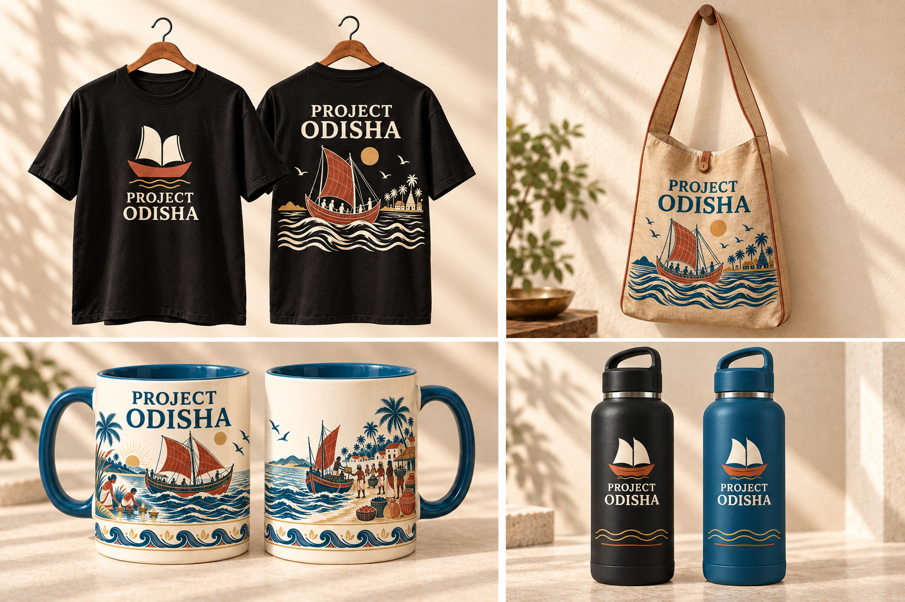

15 October 2026 / Sample development v5 / Review candidateProject Odisha
Everyday objects, Odisha stories.
New merchandise name selected by Ahimanikya Satapathy. Four product types, shared visual direction, physical samples next.

AI-generated design concept. Not a supplier photograph, approved sample or print master.New brand lockup candidates
Existing vector emblem with new live-text brand treatment. Type and placement remain candidates. Outline approved lettering before manufacturing handoff.Recommended first sample scope
- A T-shirt sample with front and back decoration, plus fit chart.
- A Story Cup sample using the actual supplier wrap template.
- Tasar swatches and one selected bag construction sample before detailed printing.
- Comparable black/blue bottle blanks and a separately costed decoration sample.
The name is decided. Final typography, bag form, flat story artwork, sample costs and order quantities remain to resolve through the actual sample process.
What changed
Project Odisha replaces UTKAL on new merchandise. Earlier designs remain history. The T-shirt back carries a story. Tasar replaces the older canvas assumption. The longer jhula remains an option alongside the two-handle design. Soft-edged flat-art attempts remain held outside this sample pack.
Prepared locally for review. No supplier contact, purchase, commercial launch or public website change.